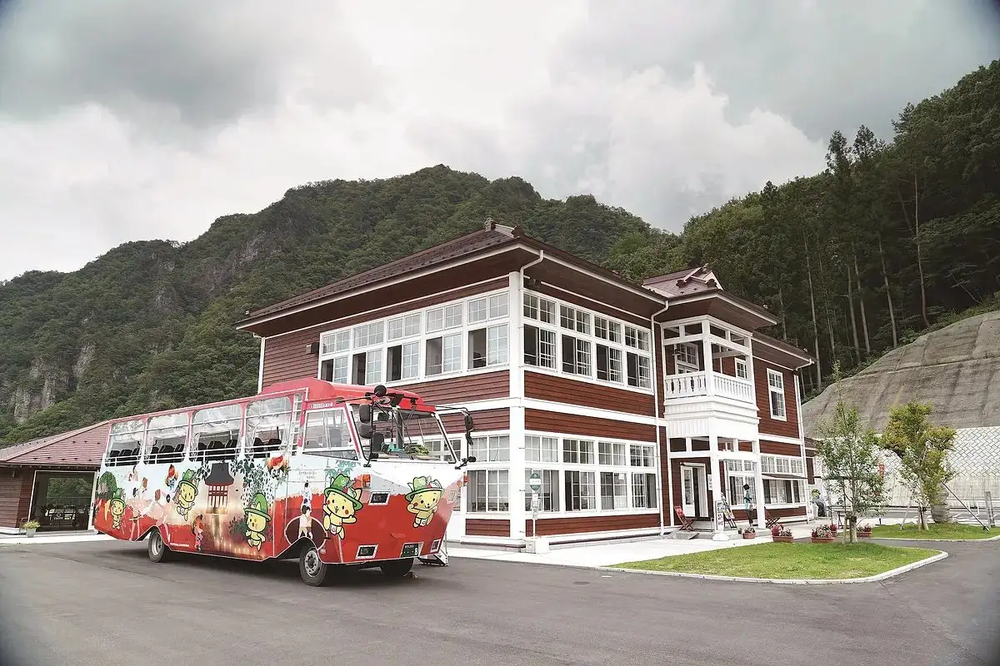
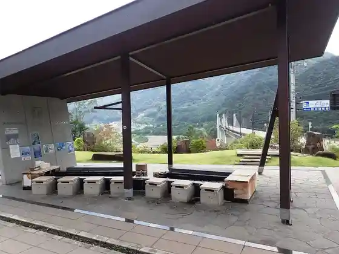
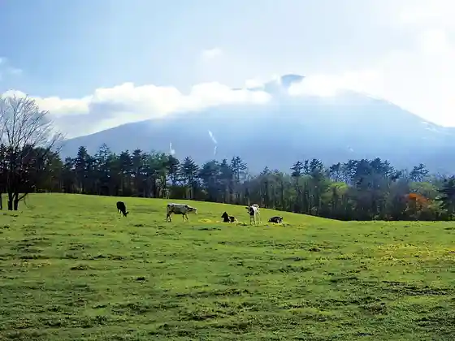

Japan / Gunma / Naganohara
Naganohara
Naganohara · Gunma
Naganohara
Highlighted on the Gunma map.

Sights
Hachi Tsu Ba Dam
Naganohara, Gunma · 0279-83-2560 · Official / source link

Gunmaken Asama Kachiku Ikusei Ranch
Naganohara, Gunma · 0279-84-2074 · Official / source link

Roadside Station Hachi Tsu Ba Furusato Kan
Naganohara, Gunma · 0279-83-8088 · Official / source link
Karuizawa Su no Park
Naganohara, Gunma · 0279-84-1227 · Official / source link
Asama Bokujo Chaya
Naganohara, Gunma · 0279-84-3698 · Official / source link
Kawara Yuon Izumi Asobi no Kichi NOA
Naganohara, Gunma · 0279-82-5250 · Official / source link
Yamba Chaya
Naganohara, Gunma · Official / source link
Hachi Tsu Ba Mizumi no Eki Maruiwa
Naganohara, Gunma · 0279-82-5056 · Official / source link
Naruhodo ! Yamba Museum
Naganohara, Gunma · 027-251-2021 · Official / source link
Naganohara Kusatsu Kuni Suteshon
Naganohara, Gunma · 0279-82-1515 · Official / source link
Yamba Tenmei Deiryu Museum
Naganohara, Gunma · 0279-82-5150 · Official / source link